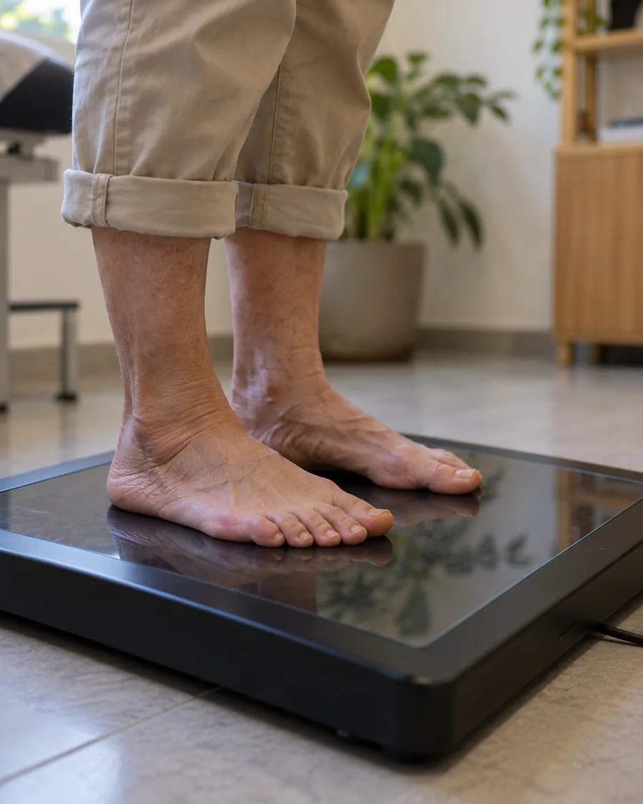
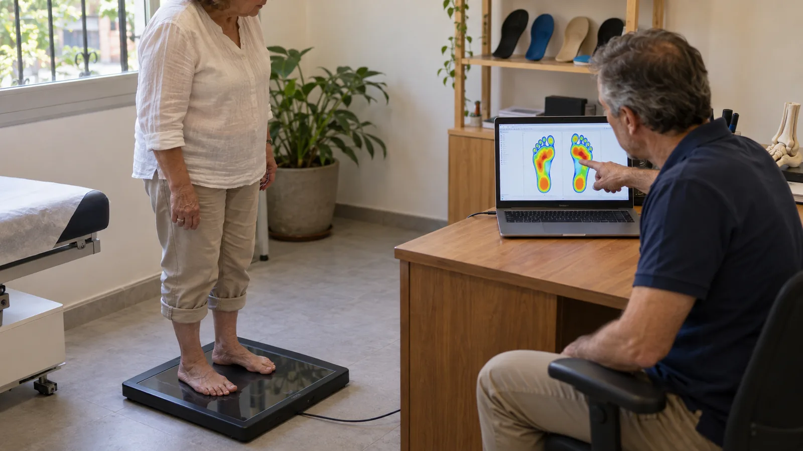

Haedo Ituzaingó Moreno
Estudio de la pisada con podógrafo digital
Te parás descalzo y en la pantalla vemos cómo apoyás y dónde cargás el peso. Con ese estudio te hacemos tus plantillas Aligna a medida.
O llamanos al 11 6638-4242

Del pie a la plantilla
Del pie a la plantilla, paso a paso
- 1Escaneamos tu pisada
Te parás descalzo sobre el podógrafo. Sin tinta y sin moldes.
- 2Vemos dónde cargás el peso
El mapa en colores muestra la presión de cada zona, y medimos el pie en milímetros.
- Largo
- 255 mm
- Antepié
- 106 mm
- Arco
- 131 mm
- 3Armamos tu plantilla, capa por capa
Con los datos de tu estudio elegimos cada pieza.
- 4Lista para tu pie
Tu plantilla Aligna, hecha a medida en Plastazote®.
Cómo es
Venís, te parás y lo ves en la pantalla

- 01Pedís turno por WhatsApp
En Haedo, Ituzaingó o Moreno, el que te quede más cerca.
- 02Te parás sobre el podógrafo
Descalzo, unos segundos. No duele.
- 03Te explicamos lo que se ve
Dónde cargás más peso, cómo es tu arco y qué conviene en tu caso.
- 04Te hacemos tus plantillas
Plantillas Aligna con los datos de tu estudio.
Para jubilados, pensionados y público en general
Campaña Salud del Pie
Traumatología integral
- IncluyeConsulta con el traumatólogo
- Y ademásPlantillas a medida con el estudio digital
Las plantillas
Plantillas a medida, hechas con tu estudio
No es un talle de góndola. Cada plantilla Aligna se fabrica con las medidas y el mapa de presión de tu pie.
- Espuma Plastazote®, liviana y cómoda.
- Para el calzado de todos los días.
- Te asesoramos sobre cómo usarlas.
Dónde estamos
Estudio de la pisada en Haedo, Ituzaingó y Moreno
Días y horarios: escribinos y te pasamos los del consultorio que te quede más cerca.
Preguntas frecuentes
Lo que más nos preguntan
¿Qué es el estudio de la pisada y cuánto dura?
Te parás descalzo sobre el podógrafo digital y en la pantalla vemos cómo apoyás cada zona del pie y dónde cargás el peso. Se hace en pocos minutos.
¿Duele? ¿Tengo que llevar algo?
No duele: solo te parás sobre una superficie de vidrio. Traé el calzado que más usás, así lo miramos también.
¿Qué diferencia hay entre el estudio digital y el de tinta?
El de tinta deja una huella. El digital muestra la presión de cada zona en colores y toma medidas del pie en milímetros, sin tinta y sin moldes.
Me duelen las rodillas o la espalda: ¿puede venir de cómo piso?
A veces la forma de pisar influye. El estudio ayuda a verlo, y si hace falta te recomendamos hacer una consulta médica.
¿Una plantilla de farmacia sirve igual que una a medida?
La de farmacia viene en talles estándar. La plantilla Aligna se fabrica con los datos de tu estudio, para tu pie.
¿Tengo que usar la plantilla en todos los zapatos?
Lo ideal es usarla en el calzado de todos los días. En el consultorio te decimos cómo hacerlo según tu caso.
¿Cuánto tarda uno en acostumbrarse?
Por lo general, unos días. Conviene empezar de a poco, unas horas por día.
¿Cada cuánto conviene repetir el estudio?
Depende de cada persona. En los chicos que están creciendo se controla más seguido.
¿Dónde se hace el estudio de la pisada?
En nuestros consultorios de Haedo, Ituzaingó y Moreno. Pedí tu turno por WhatsApp al 11 6638-4242.
Quiénes somos
Fabricante de espumas y plantillas, y representante de Plastazote®. Detrás de cada estudio y de cada plantilla Aligna.
¿Querés hacerte el estudio?
Escribinos y te damos turno en el consultorio que te quede más cerca.
Escribinos por WhatsApp11 6638-4242